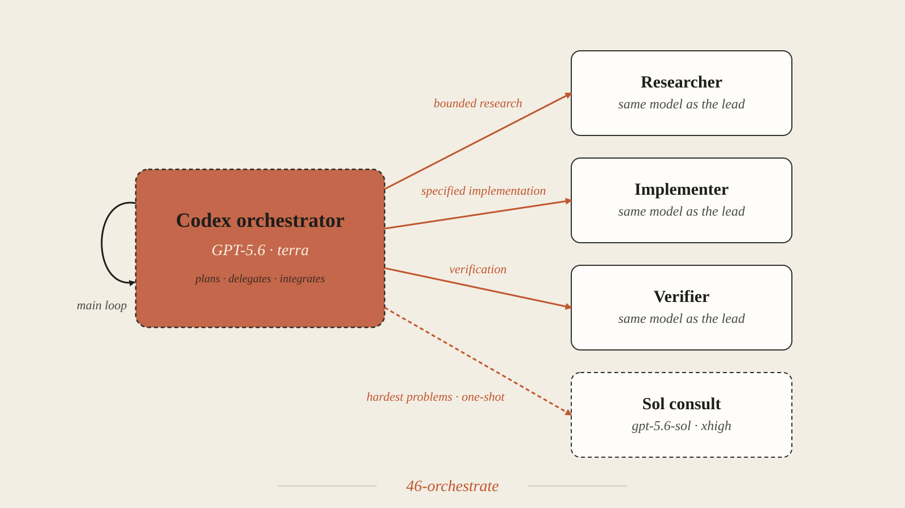

Capable models, unsettled methods
Frontier models are gaining capability fast, and the public signals mostly agree the top tier is close together. On the live aggregate leaderboards — Artificial Analysis's Intelligence Index, the human-preference LMArena, the contamination-resistant LiveBench, and independent Epoch AI — the current models cluster near the top, and the classic academic yardsticks are running out of room. MMLU-Pro and GPQA Diamond are near-saturated (around 88–90%), and Stanford's HELM, the most rigorous of them, entered maintenance mode in mid-2026 and no longer covers this generation. The few tests still distinguishing models at the top, like Humanity's Last Exam and Epoch's FrontierMath, are the exception.
But most of that measurement is about one thing: code. The best-resourced, most-cited benchmarks are coding benchmarks — SWE-bench, Aider polyglot, LiveCodeBench, Terminal-Bench — and vendors lead their launches with coding scores. Anthropic introduced Claude 4 as "the world's best coding model." Researchers have flagged the pattern, noting that benchmark numbers work heavily as competitive marketing with limited practical decision value. For someone folding these models into a social-science pipeline — designing an experiment, estimating effects, adjudicating a methods dispute — almost none of it says how they will actually do.
And you cannot simply point the strongest model at the problem and let it run. At list prices, Opus 4.8 is $5 and $25 per million input and output tokens, and Fable 5 is $10 and $50 (pricing); a long agentic run at maximum effort spends millions of tokens, so on the API the bill climbs fast. The subscription plans meter you instead: Pro ($20/month) gives a limited window before its five-hour and weekly caps bite, and even Max, at five and twenty times Pro ($100 and $200/month), has limits that shift over time. Run a top model at full effort all day and you hit a wall, whichever way you pay.
So the practical question is how to use these models. Anthropic's multi-agent guidance sets out the moves — parallelize, specialize, escalate, delegate — but not how those patterns perform on research work, at what cost, or which is worth reaching for. That is an open question, and the one this demo probes. What follows are four ways to run these models, the orchestration skills I built to test them, and what five real analyses showed.
Four ways to run the models
The four arms differ in one thing: where the reasoning happens. Two are orchestrators that lead with one model and delegate parts of the job. One skips orchestration and buys a single review. One leads with a different vendor's model. None of them dials effort down; the split is about strategy and cost, not about running a weaker setting. The difference matters because running every step on a top model in one long context is expensive, and the transcript re-pays its own token cost on every turn. Delegating bounded work to fresh, task-scoped contexts avoids that growth, which is where most of the saving comes from.
Anthropic's multi-agent guidance names the patterns this demo exercises. Parallelization fans out independent subtasks. Specialization sends each subtask to a focused agent. Escalation consults a more capable agent or model for a subset of complex subtasks. The four arms below put these ideas to work.
Fable lead fable-orchestrate

The lead is Fable 5 at max effort — the strongest model on the team, so it reasons the hard parts itself rather than handing them off. It routes around that: mechanical work to a Sonnet 4.5 worker at medium effort, wide or parallel reasoning to an Opus 4.8 subagent (which inherits the lead's max effort) when a problem is too broad to hold in one context, and a decorrelated check to a Codex peer (gpt-5.6-terra) on high-stakes calls it cannot cheaply verify. The delegates work in clean contexts, so the lead stays lean. In these runs it comes in cheaper than the opus lead while matching it on the reasoning.
Opus lead opus-orchestrate

The lead is Opus 4.8 at ultracode, the highest Opus effort. It reasons the hard parts itself and delegates the same way the Fable lead does — mechanical work to a Sonnet 4.5 worker, parallel or blind reasoning to an Opus deep-reasoner subagent, and a decorrelated check to a Codex peer on high-stakes calls. Structurally it is the Fable lead with a different lead model and a heavier effort setting; ultracode adds dynamic Workflow fan-out. That costs more, because the lead runs at full effort throughout.
Advisor advisor

Sometimes the right choice is a plain session. A Fable 5 session at max effort solves the problem, a second Fable 5 reviewer at max effort reads the finished work once and comments, and the plain session revises. The reviewer never edits your files. The single consult is the whole intervention.
Codex lead 46-orchestrate

The lead is a different vendor's model, run through the Codex CLI. Its headline design mirrors the Fable and Opus leads: a gpt-5.6-sol lead (Sol is OpenAI's flagship GPT-5.6 tier; terra and luna are the cheaper ones) at medium effort reasons the hard parts itself and delegates the bulk down to the cheaper gpt-5.6-terra. One wrinkle sets it apart from the Claude tools: Codex's native subagent tool cannot set a child's model, so a Sol lead's in-process subagents are all Sol, and reaching Terra takes out-of-band one-shot calls. Those run from an interactive Codex session — a terminal — which is how the Sol-lead arm here was captured; they just don't run from a headless one. So a fully unattended pipeline falls back to a plain gpt-5.6-terra lead whose subagents are all Terra. The Codex numbers in the charts below are that headless Terra-lead fallback; the interactive Sol-lead run is reported separately in the verdict.
The exact settings
| Arm | Lead model | Effort | Delegates to |
|---|---|---|---|
| Fable lead | Fable 5 | max | Sonnet 4.5 for mechanical work (medium effort), an Opus 4.8 subagent for wide or parallel reasoning (max effort, inherited from the lead), a Codex gpt-5.6-terra peer for a decorrelated check |
| Opus lead | Opus 4.8 | ultracode | Sonnet 4.5 for mechanical work (medium effort), an Opus 4.8 deep-reasoner subagent for parallel or blind reasoning, a Codex gpt-5.6-terra peer for a decorrelated check |
| Advisor | Fable 5 | max | one Fable 5 reviewer at max effort for a single consult |
| Codex lead | gpt-5.6-terra | medium | its own Terra subagents (a spawned subagent inherits the lead's model) — the headless Terra-lead fallback; see the note below |
These are the settings this run used, not the only sensible ones. You could push the Fable lead's Codex peer higher, hold the Opus lead at a lower effort, or give the advisor a stronger reviewer. The point of the matrix is to see how one fixed set of choices plays out across difficulty, then adjust from there.
The Codex row needs one clarification, because its skill and its demo run are not the same thing. The 46-orchestrate skill's headline is a gpt-5.6-sol lead (Sol is OpenAI's flagship GPT-5.6 tier, the counterpart of an Opus or a Fable lead) that reasons the hard parts itself and delegates the bulk down to the cheaper gpt-5.6-terra. That is the same top-model-leads-and-delegates-down shape as the Claude arms. But it only runs in an interactive Codex session, because a Sol lead can reach Terra only through out-of-band calls that the headless sandbox blocks. This demo runs headless, so its Codex arm is the Terra-lead fallback: a Terra lead whose spawned subagents are all Terra, one tier throughout. The Sol lead never runs here. So read the Codex results below as a Terra-lead run, not as a test of the Sol-lead design — which this headless demo cannot capture.
Which arm you reach for depends on the work. For easy, computable tasks, the arms reach the same answer, so you choose on cost and speed. For hard judgment calls, the arms differ in what they cost and what they catch. The runs below show that split.
The examples
Five briefs climb a ladder of difficulty. All use real, public data shipped with R packages, so anyone can re-run them with zero downloads.
The first three briefs work a community-choice conjoint, exampleData1 from the projoint R package, at rising difficulty. Describe (easy) documents the design and checks randomization balance. Estimate (standard) fits the AMCEs and plots them. Reviewer reply (moderate) answers a referee who calls the headline crime finding an artifact of the AMCE baseline.
The last two climb further. The IV replication (hard) reproduces and stress-tests a famous instrumental-variables result — Acemoglu, Johnson, and Robinson's colonial-origins finding, whose 64-country sample ships with the ivdoctr package — reproducing the headline, adding controls, restricting the sample, and flagging where the instrument fails. The methods dispute (very hard) adjudicates Dehejia-Wahba versus Smith-Todd on whether propensity-score matching recovers the LaLonde experimental benchmark (data via causaldata): compute the benchmark, run the specification curve, and decide which claim the evidence supports.
All four arms are used the same way on every brief. The three orchestrators receive the brief verbatim in a fresh session. The advisor arm always runs the same three scripted steps, a plain solve, a single consult, and a plain revise. Before any model ran, each brief got an executed reference solution and a written rubric, so grading never depends on what the runs happened to produce. Every run is committed with its logs and figures. The findings are in RESULTS.md.
How the runs are scored
Every brief is graded on six yes-or-no items from its pre-built rubric. Four are core items, the facts a competent run must get right, like reproducing the reference estimates or flagging a collapsed instrument. One is a judgment item, the call the analyst has to make, like noticing that two leading effects are a statistical tie. One is a completeness item, which gives credit for work beyond a correct answer, like reporting both the corrected and uncorrected magnitudes.
The bands follow from the items. Pass means every core item is met. Pass+ means core plus the judgment item. Distinction means all six. A run that misses any core item fails outright, whatever else it does well, because correctness cannot be traded for polish. Every brief uses the same four-one-one setup. That puts the three bands at the same heights on one shared axis, four, five, and six items of six. The dotted lines in the chart below mark them. Definitions and every run's item-by-item score are in SCORING.md.

What the runs cost and how they scored
Every number here comes from the committed run logs, scored against the answer keys.


| Mode | Describe (easy) | Estimate (standard) | Reviewer reply (moderate) | IV replication (hard) | Methods dispute (very hard) |
|---|---|---|---|---|---|
Fable lead fable |
Pass33k tok | Pass+26k tok | Pass87k tok | Distinction12k tok | Distinction99k tok |
Opus lead opus |
Distinction55k tok | Distinction71k tok | Pass+225k tok | Distinction99k tok | Distinction129k tok |
Advisor advisor |
Distinction197k tok | Pass+73k tok | Distinction161k tok | Distinction90k tok | Distinction212k tok |
Codex lead 46 |
Pass64k tok | Pass+64k tok | Pass92k tok | Pass46k tok | Distinction75k tok |
Every cell now shows tokens, the one unit all four arms share, so the Codex arm sits with the rest. The table below adds the dollar cost where the CLI reports it.
| Arm | Cost across the 5 briefs | Tokens across the 5 briefs |
|---|---|---|
| Fable lead | $0.72 to $2.64 | 12k to 99k |
| Opus lead | $1.08 to $5.19 | 55k to 225k |
| Advisor | $1.09 to $7.08 | 73k to 212k |
| Codex lead | no USD reported | 46k to 92k |
One note keeps the token column honest across vendors. For the Claude arms it counts tokens processed excluding cached-context reads, which are cheap reused context and run into the millions per run; leaving them in would make the Claude arms look 50 times larger than they cost. The Codex CLI reports a single total and no dollars, so its figure is shown as-is. Read the tokens as comparable magnitudes, not to the digit.
Three patterns hold. First, on the easy and standard briefs the arms mostly converge. The differences are a completeness detail or a single judgment call, not correctness, so you choose on cost and speed. The fable lead finished the easy brief in 2.6 minutes, the opus lead in 4.8.
Second, and this is the sharpest lesson: the verdicts move between draws. Across repeated runs of the same setup, the reviewer reply alone has landed both Pass and Pass+ — nothing about the brief changed; the judgment it turns on, whether crime's razor-thin lead over commute time is a statistical tie, is simply a coin the run flips. A single draw can make one arm look a rubric item worse, and the next moves the miss somewhere else. The specific misses are draws, not fixed properties of an arm, which is why this page calls the runs specimens, not benchmarks, and why a real decision should rest on more than one.
Third, cost tracks how unsettled the answer is. The canonical ladder rungs, the IV replication and the methods dispute, stay Distinction for every arm, because they have literature-settled answers a pipeline can reach — the fable lead reproduced every AJR estimate exactly in three turns and about a dollar. The reviewer reply is the brief with an original judgment call, a statistical tie no publication settles, and it stays the one the arms most often trip on. Across the five briefs the fable arm runs about eight dollars, the opus arm about thirteen.
The Codex arm, 46-orchestrate, ran headless (its Terra-lead fallback) on all five briefs. It is fast and lean throughout, 3 to 5 minutes and 46k to 92k tokens, and it climbs the quality chart as the briefs get harder, ending at Distinction on the methods dispute with every AJR estimate exact. It drops the same judgment sentences the Claude runs sometimes drop on the easier briefs: the statistical-tie caveat on the reviewer reply, and the two-sided ceiling on the IV replication. It now sits in the token chart with the rest; the Codex CLI simply reports no dollars.
Verdict — which setup, when
The setups are not interchangeable; each fits a different kind of work. The scoreboard cannot rank them on reasoning — these briefs top out where every arm aces them, so the two orchestrators tie and the moderate-brief misses are draw-to-draw noise. What it can tell you is which setup to reach for, and which to leave alone.
| Setup | When to reach for it |
|---|---|
| Advisor | The default for a single, well-scoped analysis. It reached the top band more reliably than any orchestrator — a second model that re-computes the work from scratch catches the judgment and completeness a solo pass leaves implicit. Moderate cost; reach for it first. |
| Fable lead | When the task is too big to hold in one context — a broad migration, a multi-file audit, a many-source survey. The decompose-and-parallelize overhead pays at scale, not on one analysis, where it only matches the advisor at more cost. Cheapest orchestrator here, and tied with the Opus lead on every reasoning brief. |
| Opus lead | Rarely, on work this size. Same scores as the Fable lead at higher cost — it buys nothing extra here. Reserve it for a task hard enough to strain a top model's reasoning, which none of these were. |
| Codex lead | A cross-vendor check — capable, but it can't run unattended. Its strong form, a Sol lead that reasons in place and delegates the bulk down to Terra, runs in an interactive Codex session; captured that way it matched the reason-in-place Claude leads (25 of 30) and took the IV replication to Distinction, where the headless Terra-lead fallback lands at Pass. The one real limit versus the Claude arms is automation: the Sol lead's cross-tier delegation uses out-of-band calls that need an interactive terminal, so a fully headless pipeline drops to the weaker single-tier Terra lead. |
One rule cuts across all of them: difficulty picks the setup, not effort. None of these dialed effort down; on computable work any lean arm converges and you buy the cheapest, and only where the answer needs an original judgment does a second read or a strong reason-in-place lead pull ahead.
What this took, and where it broke
Running these setups on real analyses is less like querying a chatbot than like managing a small research team. Each run decomposes the task, decides what the lead reasons itself versus what it hands to a cheaper worker or a second model, keeps a human in the loop for the judgment calls, and spends effort where the answer is unsettled rather than everywhere. And none of the scores mean anything without ground truth. Every brief got an executed reference solution and a written rubric before any model ran, and the results were graded blind — otherwise you cannot tell a competent answer from a confident wrong one.
It broke in instructive ways:
- Background checks get orphaned. A run can launch a blind second-opinion audit and, running headless, end before that check returns — the deliverable is complete, but the extra check never folds in and the run's time and tokens come out truncated. It happened here on the methods dispute; we re-ran it in a session that waited to get a clean number. If the independent check is the point, run it where it can finish.
- The second-vendor arm doesn't automate. The Codex (OpenAI) setup's strong form runs in an interactive Codex session — a terminal — and performs like the reason-in-place Claude leads, but its cross-tier delegation uses out-of-band calls that don't run headless, so an unattended pipeline falls back to a weaker single-tier mode. One run also took a retry when a delegated task wandered into another tool. It works; it just doesn't drop into a scripted pipeline the way the Claude arms do.
- A single scoreboard is a specimen, not a benchmark. These models are non-deterministic. The same brief on the same setup landed different verdicts across runs. Any one table is one draw — read the pattern across several, not the cell.
- Effort is a budget. The stronger the model and the higher the effort, the faster the tokens go; the discipline is spending them where the answer is still unsettled and delegating the rest.
- There is no benchmark for this. Nothing public measures how these models do on social-science reasoning, so this demo is a small, hand-built probe on five analyses — a shape, not a score, and worth re-running before you lean on it.
Run it yourself
First install Claude Code and the Open Science Skills plugin. You also need R with the packages the briefs use.
npm install -g @anthropic-ai/claude-code
claude plugin marketplace add scdenney/open-science-skills
claude plugin install oss@open-science-skills
Rscript -e 'install.packages(c("projoint","ivdoctr","AER","car","causaldata","MatchIt"))'For the headless Claude runs, keep ANTHROPIC_API_KEY unset. Otherwise, the API account is billed instead of your claude.ai login. One representative command per arm follows. Any brief slots in the same way.
# Fable lead (fable-orchestrate), headless: Fable 5 at max effort
cd runs/fable/t1
env -u ANTHROPIC_API_KEY claude -p \
"/oss:fable-orchestrate $(cat ../../../prompts/t1-descriptive.md)" \
--output-format json > claude-envelope.json
# Opus lead (opus-orchestrate), interactive Opus 4.8 + ultracode session, see runs/opus/SESSION-PROTOCOL.md
# Advisor, plain Fable solve then one Fable review then revise, see prompts/run.md
# Codex lead (46-orchestrate), gpt-5.6-terra at medium via the Codex CLI, see prompts/run.mdThe full protocol for every arm, and the complete item-by-item scores and run logs, live in the GitHub repository — see run.md for the protocol and RESULTS.md / SCORING.md for the scores.